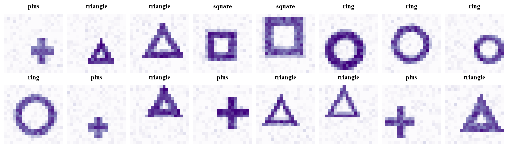
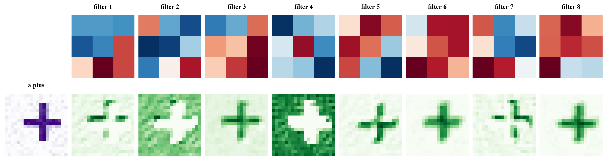

Machine Learning
 about 11 min
about 11 min ml-w9d2.ipynb
ml-w9d2.ipynb
Convolutional neural networks
Stack convolutions, ReLU and pooling, and let backpropagation choose the filters. The result sees shapes better than a plain network, with a tenth of the weights.
In this lesson you will
- Describe the layers of a CNN and the shape of the data after each one
- Explain channels: why the second layer's filters look at all the first layer's feature maps
- Train a CNN in PyTorch, count its weights, and look at what its filters learned
Warm-up
1 minFrom edges to shapes

Yesterday you chose the filters by hand. But who knows which filters a ring detector needs? Backpropagation does. A convolutional neural network learns its own filters, in layers: the first finds edges, the next combines edges into corners and curves, and the last decides what shape it's looking at.
Big idea
4 minConv, ReLU, pool, repeat
A CNN is built from blocks, each with three steps:
- Convolution with several filters at once: each one makes its own feature map, so 8 filters turn one image into 8 maps, called channels.
- ReLU: negative responses become 0 ("not here"), positive ones stay.
- Max pooling: each block keeps its strongest response, halving the size.
In the second block, each filter is in every one of the 8 channels: a stack of weights. So it can combine features: "a horizontal edge here, and a vertical edge just to the right" is a corner. After two blocks, a image has become 16 maps of ; they are flattened into 400 numbers, and a final linear layer turns those into one score per class, with softmax and cross-entropy as in week 3.
Why it works so well on images:
- Few weights. Layer 1 has weights, whatever the image size. A plain network's first layer has one weight per pixel per neuron.
- Same feature, anywhere. The filters slide, so a corner is found wherever it is; pooling then lets the network ignore exactly where.
- Bigger views, layer by layer. Each layer-2 pixel sees a patch of pooled maps, which covers pixels of the original: its receptive field grows with depth.
Famous CNNs (LeNet in 1989, AlexNet in 2012, ResNet in 2015) are exactly this, with more blocks, more channels and a few clever extras.
A CNN learns its own filters, block by block: convolutions find local patterns, pooling forgets exact positions, and deeper layers combine small patterns into big ones.
Play
3 minLook inside
This is the CNN you'll train in the notebook, running in your browser. Green: what the 8 first-layer filters see. Purple: the 16 maps of the second layer. Then the four scores.
Try this
Click through a few test shapes: which first-layer maps light up on the stroke, and which on the empty space around it? Then draw your own shapes: a ring in a corner, a tiny square, a big triangle. Is the position a problem? Finally draw something that's none of the four, like a letter: the network still has to pick one of its four answers.
Code
2 minA CNN in PyTorch
The notebook for this lessonEvery code cell below, with what it printed, is in
ml-w9d2.ipynb. To change the code and run it yourself, open the notebook in Google Colab (free, in your browser) or download it for your own Jupyter.import time
import numpy as np
import matplotlib.pyplot as plt
import torch
import torch.nn as nn
SHAPES = ["ring", "square", "triangle", "plus"]
def make_shapes(n, size=20, seed=0):
"""n noisy size x size images of the four shapes, at random places, sizes and stroke widths."""
rng = np.random.default_rng(seed)
yy, xx = np.mgrid[0:size, 0:size] + 0.5
X = np.zeros((n, size, size), np.float32)
y = rng.integers(0, 4, n)
for i in range(n):
r = rng.uniform(3.5, 6.5) # size
cx, cy = rng.uniform(r + 0.5, size - r - 0.5, 2) # center
w = rng.uniform(0.9, 1.6) # stroke width
dx, dy = xx - cx, yy - cy
if y[i] == 0: # distance from every pixel to the shape's outline
d = np.abs(np.hypot(dx, dy) - r)
elif y[i] == 1:
d = np.abs(np.maximum(np.abs(dx), np.abs(dy)) - 0.85 * r)
elif y[i] == 2:
k = np.sqrt(3)
edges = np.minimum.reduce([np.abs(dy - r / 2), np.abs(k * dx - dy - r) / 2, np.abs(-k * dx - dy - r) / 2])
near = (dy <= r / 2 + w) & (k * dx - dy <= r + 2 * w) & (-k * dx - dy <= r + 2 * w)
d = np.where(near, edges, 99)
else:
d = np.where((np.abs(dx) <= r) & (np.abs(dy) <= r), np.minimum(np.abs(dx), np.abs(dy)), 99)
ink = np.clip(w - d + 0.5, 0, 1) * rng.uniform(0.7, 1.0)
X[i] = np.clip(ink + rng.normal(0, 0.08, ink.shape), 0, 1)
return X, y
X_train, y_train = make_shapes(1500, seed=0)
X_test, y_test = make_shapes(1000, seed=1)
fig, axes = plt.subplots(2, 8, figsize=(12, 3.4), layout="constrained")
for ax, img, label in zip(axes.flat, X_train, y_train):
ax.imshow(img, cmap="Purples", vmin=0, vmax=1)
ax.set_title(SHAPES[label], fontsize=11)
ax.axis("off")
plt.show()What it printed in the notebook
torch.manual_seed(0)
mlp = nn.Sequential(nn.Flatten(), nn.Linear(400, 64), nn.ReLU(), nn.Linear(64, 4))
torch.manual_seed(0)
cnn = nn.Sequential(
nn.Conv2d(1, 8, kernel_size=3, padding=1), nn.ReLU(), nn.MaxPool2d(2), # 8 feature maps, 10 x 10
nn.Conv2d(8, 16, kernel_size=3, padding=1), nn.ReLU(), nn.MaxPool2d(2), # 16 feature maps, 5 x 5
nn.Flatten(), nn.Linear(16 * 5 * 5, 4))
count = lambda model: sum(p.numel() for p in model.parameters())
print(f"plain network: {count(mlp):,} weights")
print(f"CNN: {count(cnn):,} weights\n")
x = torch.tensor(X_train[:32]).unsqueeze(1) # add the channel axis: (32, 1, 20, 20)
print(f"{'input':10s} {tuple(x.shape)}")
for layer in cnn:
x = layer(x)
print(f"{type(layer).__name__:10s} {tuple(x.shape)}")What it printed in the notebook
plain network: 25,924 weights CNN: 2,852 weights input (32, 1, 20, 20) Conv2d (32, 8, 20, 20) ReLU (32, 8, 20, 20) MaxPool2d (32, 8, 10, 10) Conv2d (32, 16, 10, 10) ReLU (32, 16, 10, 10) MaxPool2d (32, 16, 5, 5) Flatten (32, 400) Linear (32, 4)
torch.set_num_threads(1)
Xtr, ytr = torch.tensor(X_train).unsqueeze(1), torch.tensor(y_train)
Xte, yte = torch.tensor(X_test).unsqueeze(1), torch.tensor(y_test)
def train(model, epochs=15):
opt = torch.optim.Adam(model.parameters(), lr=3e-3)
loss_fn = nn.CrossEntropyLoss()
g = torch.Generator().manual_seed(0)
for epoch in range(epochs):
order = torch.randperm(len(Xtr), generator=g)
for i in range(0, len(Xtr), 64):
batch = order[i:i + 64]
opt.zero_grad()
loss_fn(model(Xtr[batch]), ytr[batch]).backward()
opt.step()
return model
for name, model in [("plain network", mlp), ("CNN", cnn)]:
t0 = time.perf_counter()
train(model)
with torch.no_grad():
acc = (model(Xte).argmax(dim=1) == yte).float().mean().item()
print(f"{name:14s} test accuracy {acc:.3f} ({count(model):,} weights, {time.perf_counter() - t0:.1f} s)")What it printed in the notebook
plain network test accuracy 0.924 (25,924 weights, 1.0 s) CNN test accuracy 0.983 (2,852 weights, 1.4 s)
The CNN wins clearly, 98% against 92%, with about a ninth of the weights.
W1 = cnn[0].weight.detach()[:, 0] # (8, 3, 3)
img = Xte[3:4]
with torch.no_grad():
maps = torch.relu(cnn[0](img))[0] # (8, 20, 20)
fig, axes = plt.subplots(2, 9, figsize=(13, 3.4), layout="constrained")
axes[0, 0].axis("off")
axes[1, 0].imshow(img[0, 0], cmap="Purples")
axes[1, 0].set_title(f"a {SHAPES[y_test[3]]}", fontsize=10)
axes[1, 0].axis("off")
for k in range(8):
lim = W1[k].abs().max()
axes[0, k + 1].imshow(W1[k], cmap="RdBu_r", vmin=-lim, vmax=lim)
axes[0, k + 1].set_title(f"filter {k + 1}", fontsize=10)
axes[1, k + 1].imshow(maps[k], cmap="Greens")
for ax in axes[:, k + 1]:
ax.axis("off")
plt.show()What it printed in the notebook

Your turn
optionalYour turn: which part matters?
Train a CNN with only one block, and one with both blocks but very few filters. Which does better?
def report(name, model):
with torch.no_grad():
acc = (model(Xte).argmax(dim=1) == yte).float().mean().item()
print(f"{name:22s} {count(model):6,} weights test accuracy {acc:.3f}")
torch.manual_seed(0)
one_block = None # TODO: nn.Sequential(Conv2d(1, 8, 3, padding=1), ReLU, MaxPool2d(2), Flatten, Linear(8 * 10 * 10, 4))
torch.manual_seed(0)
thin = None # TODO: like cnn, with 2 then 4 filters (and Linear(4 * 5 * 5, 4))
# TODO: train both, then report("one block", one_block) and report("2 and 4 filters", thin)Need a hint?
Copy the cnn definition and change it. One block: drop the second Conv2d, ReLU and MaxPool2d, and the linear layer gets 8 * 10 * 10 inputs. Then report("one block", train(one_block)).
Show a solution
def report(name, model):
with torch.no_grad():
acc = (model(Xte).argmax(dim=1) == yte).float().mean().item()
print(f"{name:22s} {count(model):6,} weights test accuracy {acc:.3f}")
torch.manual_seed(0)
one_block = nn.Sequential(nn.Conv2d(1, 8, 3, padding=1), nn.ReLU(), nn.MaxPool2d(2), nn.Flatten(), nn.Linear(8 * 10 * 10, 4))
torch.manual_seed(0)
thin = nn.Sequential(nn.Conv2d(1, 2, 3, padding=1), nn.ReLU(), nn.MaxPool2d(2),
nn.Conv2d(2, 4, 3, padding=1), nn.ReLU(), nn.MaxPool2d(2), nn.Flatten(), nn.Linear(4 * 5 * 5, 4))
report("full CNN", cnn)
report("one block", train(one_block))
report("2 and 4 filters", train(thin))
print("Two thin blocks (500 weights) beat one wide block (3,284): the second block combines the first one's")
print("edges into corners and curves, and its pooling lets the network ignore where exactly they are.")What it printed in the notebook
full CNN 2,852 weights test accuracy 0.983 one block 3,284 weights test accuracy 0.890 2 and 4 filters 500 weights test accuracy 0.911 Two thin blocks (500 weights) beat one wide block (3,284): the second block combines the first one's edges into corners and curves, and its pooling lets the network ignore where exactly they are.
Check yourself
1 minQuick check
Question 1 of 3
After
Conv2d(8, 16, kernel_size=3, padding=1), a batch of shape (32, 8, 10, 10) becomes…Question 2 of 3
How many weights does one filter of
Conv2d(8, 16, kernel_size=3) have, not counting its bias?Question 3 of 3
What does max pooling buy the network?
Wrap-up
1 minToday in one sentence
Go deeper (optional)
ISLP section 10.3 (convolutional neural networks), and Dive into Deep Learning (d2l.ai), chapters 7 and 8 (from LeNet to ResNet). The classics: LeCun and coauthors, "Gradient-based learning applied to document recognition" (1998), and Krizhevsky, Sutskever and Hinton, "ImageNet classification with deep convolutional neural networks" (2012). Distill's "Feature visualization" (Olah, Mordvintsev and Schubert, 2017) shows what filters deep in a big CNN respond to.
Tomorrow: the project. A CNN reads handwritten digits, including yours, and you'll test how well it copes when a digit isn't centered.

That's the lesson!
Tap the button to save it. Short and steady wins.
Marked by mistake? Undo